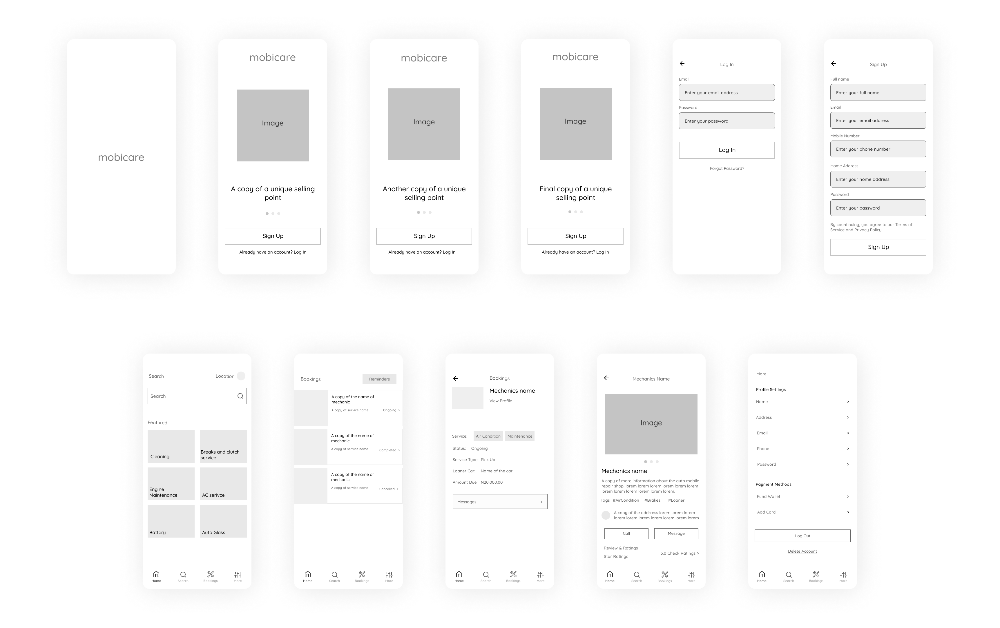

Overview
A mobile application that helps its users find reliable automobile maintenance services with ease.
It is unavoidable that a vehicle will require maintenance at some point, but the steps involved in doing so can be inconvenient. Problems include not knowing any mechanics in the region, or worse, entrusting it to an unskilled one.
This application aims to make car maintenance and repair a seamless process for its users.
Problem
The challenges that sparked this idea were dealing with the long time it takes an automobile mechanic to fix a car and the impact it has on owners' daily routine, as well as mechanics' substandard work.
I saw this as a chance to develop a solution that provides users with access to dependable mechanics wherever they are and help them to deal with alternative means of getting around while receiving automobile maintenance.
Goals
The goals of this study are to find a way to make it easy and quick for users to gain access to reliable mechanics, and to give them an option for alternative means of transportation.
Process
Research
During the interview process, participants expressed their dissatisfaction with the following:
- Automobile mechanics took longer than planned to finish repairs on their automobiles, causing them to change their plans because they were so reliant on their vehicles.
- In cases where cars have problems on an unfamiliar road, users complained about not having a way to get reliable mechanics in the area.
I then used competitive research to look at alternative ways this problem has been managed in the past, and it was discovered that these service providers were only available in select places, which meant that reaching some clients would either take longer or not happen at all.
Personas
Based on the insights from interviews and research, I set out to build a solution for specific target groups:


Solution
I created some product requirements that would meet the needs of the users based on the use cases of these personas.
- A feature that would provide users with a list of automotive specialists in a certain location, such as mechanics and tow services, based on the sort of service needed.
- A feature to allow users to book and monitor services selected.
- A feature that allows the user to choose to borrow a car from the mechanic while theirs is being repaired.
- A feature that reminds users to schedule a service for a certain date.
To make these features possible, we'd need mechanics that specialize in specific services in their various locations. This means we'd have to create two applications: one for those who want to offer their services to register and accept services, and another for others who want to find them. However, for the sake of this case study, we will only look into the latter.
Information Architecturre
With the requirements in mind, it was important to develop an intuitive workflow to give users a chance to achieve their goals seamlessly.

Wireframes
After paper sketches and several iterations, I created a mid-fidelity wireframe that shows the layout and structure of the application.
Then I decided to incorporate navigation and functionality by doing a Low Fidelity prototype which was then used for usability testing. View the Low Fidelity prototype here.
Style Guide

Mockups
As this is a new type of product, I incorporated onboarding screens to inform users about the application's features and benefits, as well as a Log In and Sign Up link on each screen.

Some mockups of the Home screen, Search screen, Bookings screen and others after usability Testing:

The High Fidelity Prototype showed a straight forward user flow for searching for and reserving automobile services. View the High Fidelity Prototype here.
Takeaway
Results
After conducting usability testing, it showed that this application reduced the time it took for users to get services from reliable mechanics.
My learning
This case study was challenging and exciting. I improved on my design process and I also learned how to think like a designer.
Next Steps
I believe this product should be built as it would considerably improve the lives of vehicle owners as well as automobile mechanics.